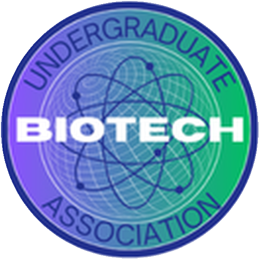
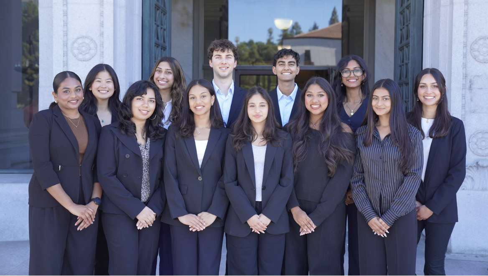
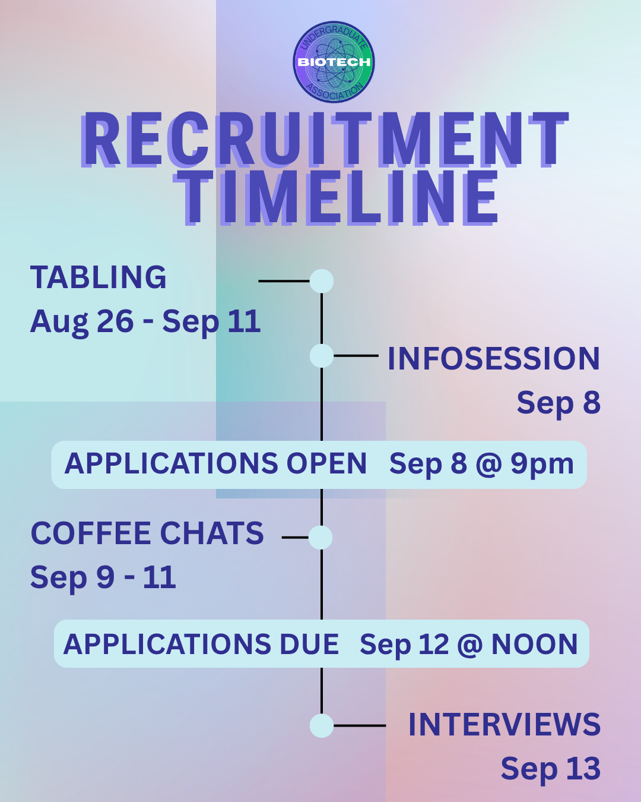

General membership
Learn at your own pace.
Join events when they interest you, hear about new opportunities, meet industry professionals, and find guidance from other students.

Undergraduate Biotech Association UC BerkeleyWe connect curious students with the people, knowledge, and opportunities shaping the future of biotechnology.
The Undergraduate Biotech Association demystifies the vast and diverse biotechnology industry through speaker series, networking events, workshops, and more.
As Berkeley’s undergraduate club dedicated to biotechnology careers, we connect students with equitable resources, industry professionals, and the opportunities surrounding the Bay Area.
Follow our work on InstagramEstablished 2024
UBA is Berkeley’s undergraduate club dedicated to exploring careers across biotechnology. We make the field easier to understand through speaker series, networking events, workshops, and a welcoming student community.
General membership
Join events when they interest you, hear about new opportunities, meet industry professionals, and find guidance from other students.
Committee membership
Work behind the scenes with one of our four teams and take on projects, events, outreach, and club operations throughout the semester.

Fall 2026 recruitment
Applications are open for general and committee members. Sign up for a coffee chat, meet the team, and find the role that fits you.
